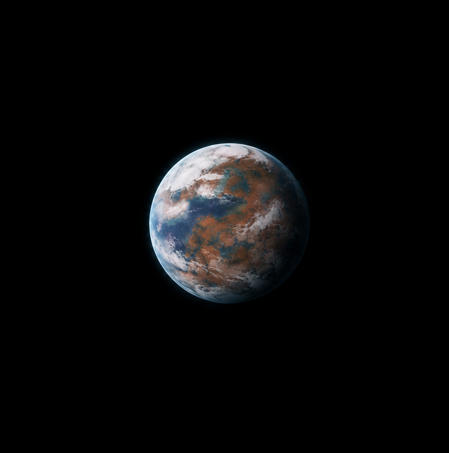
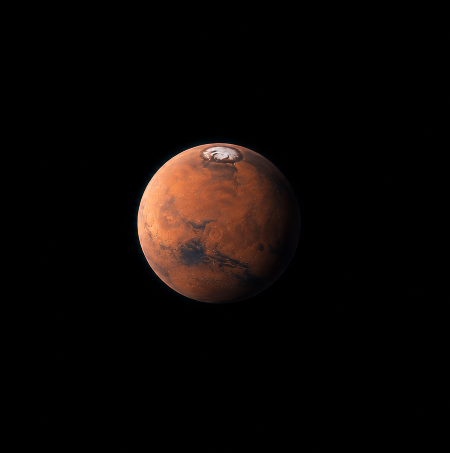
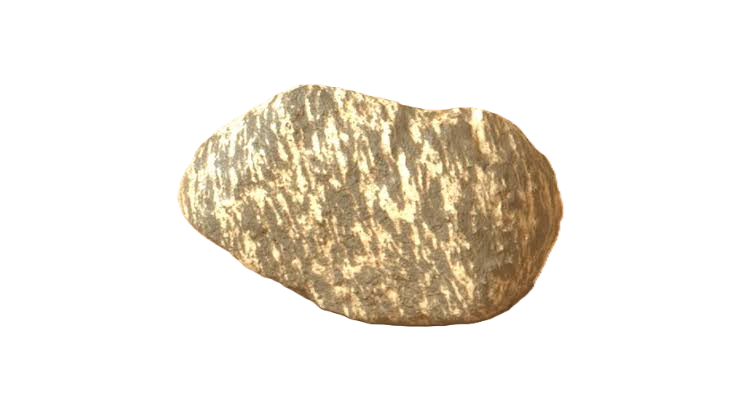
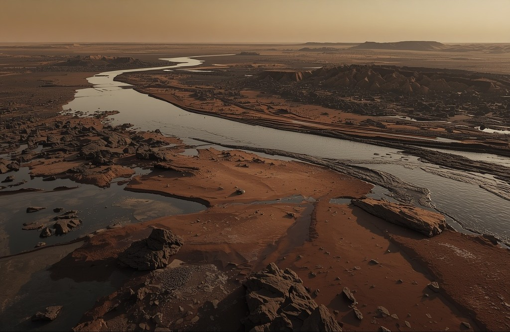

مریخ امروز سیارهای سرد و خشک است؛ اما شواهدی وجود دارد که نشان میدهد در گذشته، شرایط آن بسیار متفاوت بوده است. آیا این شرایط میتوانسته برای شکلگیری یا ادامهی حیات مناسب باشد؟
شواهد سطح مریخ نشان میدهند که در گذشته، آب مایع در بخشهایی از این سیاره وجود داشته است.
آب، یکی از مهمترین سرنخهای گذشتهی مریخ است.
ادامهی بررسی ←شواهد نشان میدهند که مریخ در گذشته جوی ضخیمتر و دورههایی با شرایط گرمتر و مرطوبتر داشته است؛ اما میزان و پایداری این شرایط هنوز موضوع پژوهش است.


مریخِ باستان احتمالاً با مریخ امروزی بسیار متفاوت بوده است.
ادامهی بررسی ←در برخی نمونههای مریخی، ترکیبات آلی حاوی کربن شناسایی شدهاند؛ اما وجود این مواد بهتنهایی به معنی وجود حیات نیست.

یک سرنخ مهم پیدا شد؛ اما هنوز پاسخ نهایی را نداریم.
ادامهی بررسی ←سطح مریخ نشانههایی از محیطهایی را در خود حفظ کرده است که میلیاردها سال پیش، شرایط بسیار متفاوتی داشتهاند.

محیط باستانی مریخجریان آب میتوانسته رسوبات را جابهجا کرده و در دهانهی رودخانهها بهجا بگذارد.
برخی نواحی مریخ نشانههایی از دریاچههای باستانی و رسوبات باقیمانده از آنها دارند.
زیر سطح مریخ ممکن است برای مدت بیشتری شرایط متفاوتی نسبت به سطح سرد و خشک آن داشته باشد.
این محیطها بخشی از شواهدی هستند که گذشتهی متفاوت مریخ را آشکار میکنند.
ادامهی بررسی ←شواهد نشان میدهند که مریخ باستانی احتمالاً آب مایع، جوی متفاوت و محیطهایی داشته که میتوانستند شرایط مناسبتری برای شکلگیری حیات فراهم کنند.
مریخ باستان، احتمالاً قابلزیستتر از امروز بوده است. اما:
شرایطی که میتوانستهاند از حیات پشتیبانی کنند.
شواهد مستقیمی که نشان دهد حیات واقعاً وجود داشته است.
هنوز شواهد مستقیمی از وجود حیات در مریخ پیدا نشده است.